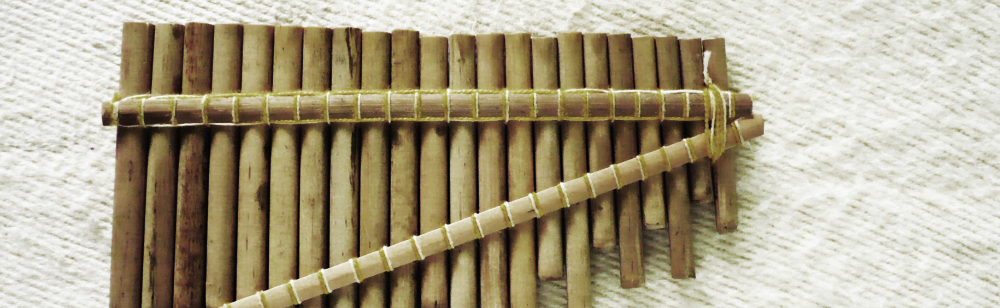
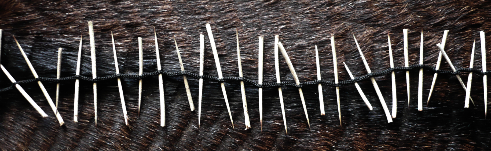
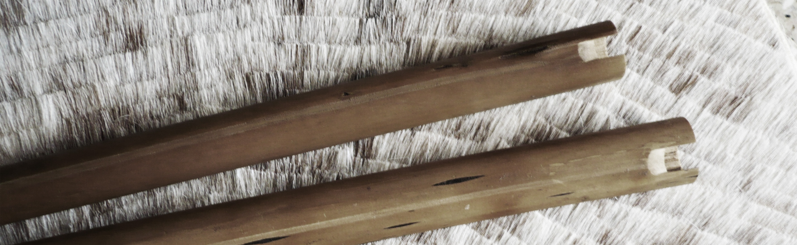
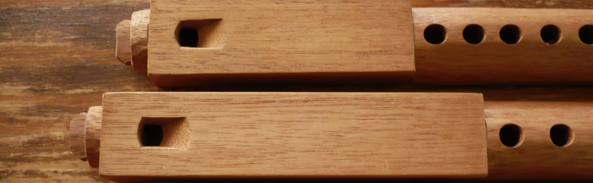
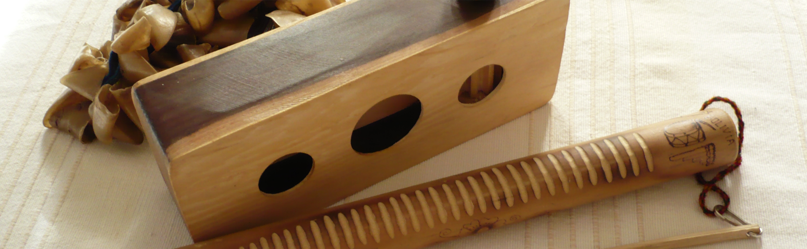

Activities
Home > Activities
The activities developed within Instrumentarium translate research on musical instruments into public, educational, and institutional contexts. Through lectures, demonstrations, workshops, and collaborative programs, these initiatives explore instruments not only as tools for making sound, but also as documents that embody histories, territories, and systems of knowledge.
Drawing on materials from archives, libraries, museums, and field research, these activities bring together performance, documentation, and critical reflection. They are designed for diverse audiences—including cultural institutions, universities, community organizations, and the general public—and can be adapted to different contexts and formats.

Keynote Lectures
Keynote lectures present the conceptual frameworks that guide the Instrumentarium project. These talks explore musical instruments as material documents that carry histories, territories, and systems of knowledge. They connect the study of instruments with archives, cultural memory, and the ways institutions describe and represent musical traditions.
Drawing on case studies from Latin America and other regions, these lectures examine questions such as how instruments are classified and described in archives, how musical traditions come to be defined and recognized as "heritage," and how recording, circulation, and institutional narratives shape what is recognized as tradition.
Designed for universities, museums, conferences, and cultural programs, keynote lectures combine historical analysis, critical reflection, and examples drawn from the study and documentation of musical instruments and sound cultures.
Examples on the different areas of work
A. Instruments as Knowledge Systems
- What Instruments Know: Musical Design as Cultural Knowledge
- Beyond Sound: Musical Instruments as Documents of Culture and Memory
- The Intelligence of Instruments: How Musical Technologies Store Knowledge
B. Instrument Classification and Documentation
- When Instruments Don't Fit the Catalog: Limits of Musical Classification
- Beyond Hornbostel & Sachs: Rethinking How Instruments Are Described
- The Archive Problem: Why Musical Instruments Resist Our Categories
C. Sound, Territory, and Material Culture
- Sound and Landscape: How Territory Shapes Musical Instruments
- From Forest to Festival: Materials, Environment, and Instrument Design
- Instruments of Place: Ecology, Resources, and Musical Technology
D. Tradition, Canon, and Recording
- Who Decides What Is "Traditional"? Recording, Canon, and Musical Authority
- From Local Sound to Global Canon: How Recordings Transform Tradition
- When One Recording Defines a Tradition
E. Instrument Collections and Archives
- Musical Instruments in the Archive: Problems of Description and Context
- Curating Sound Objects: Rethinking Instrument Collections in Museums
- From Artifact to Archive: Interpreting Musical Instruments in Collections

Lecture-Demonstrations
Lecture-demonstrations combine discussion and live sound. In these programs, musical instruments are presented, played, and examined as historical and cultural artifacts. Rather than treating them only as objects of performance, the sessions explore their construction, acoustic logic, social roles, and the documentary traces they leave in archives and oral traditions.
Through sound examples, visual materials, and contextual commentary, audiences encounter instruments as carriers of memory and knowledge. These activities draw on field research, archival sources, and the author's own collections.
Examples of instrument-focused lecture-demonstrations
-
How Aerophones Work: Air, Resonance, and Sound
From String to Sound: Principles of Chordophones
Skin into Sound: Understanding Membranophones
- Panpipes of the Andean Plateau: Structure, Ensemble Logic, and Sound
- Quenas Across Materials: Cane, Bone, Wood, and More
- Mouth-Bows of the Amazon: Resonance, Voice, and Body
- Broken Voices: Pinkillus, Tarkas, and Others
- All the Charangos
- The Traditional Clarinets of South America
Examples on the different areas of work
A. Instruments as Knowledge Systems
- What Instruments Know: Sound, Craft, and Cultural Memory
- The Knowledge Inside Instruments: Design, Gesture, and Memory
- Listening to the Object: Instruments as Carriers of Knowledge
B. Instrument Classification and Documentation
- When Instruments Don't Fit the Catalog
- Beyond Hornbostel–Sachs: Instruments That Break the System
- How Do You Classify This? Problems in Describing Musical Instruments
C. Sound, Territory, and Material Culture
- Sounds of Place: Instruments Shaped by Landscape
- Materials and Environment in Musical Instrument Sound
- Territory in Sound: How Landscape Becomes Music
D. Tradition, Canon, and Recording
- Recording and the Birth of Musical Canon
- The Sound of Tradition: How Recordings Shape Musical Identity
- From Village Music to "Traditional Music"
E. Instrument Collections and Archives
- Instruments in the Archive: Objects, Sound, and Memory
- What Museums Keep Silent: Interpreting Instrument Collections
- From Artifact to Sound: Bringing Instrument Collections to Life

Workshops and Training Sessions
Workshops and training sessions provide practical spaces for learning and discussion around the documentation, interpretation, and management of musical instruments and sound traditions. These activities combine conceptual reflection with hands-on exercises, allowing participants to examine instruments, recordings, and archival materials as sources of cultural and historical knowledge.
Sessions address topics such as the documentation of instruments in collections, challenges in classification and cataloging, methods of field organology, and approaches to working with sound heritage in institutional and community contexts.
These programs are designed for museum professionals, archivists, librarians, researchers, students, and others involved in the study or stewardship of musical and sonic heritage.
Examples on the different areas of work
A. Instruments as Knowledge Systems
- Documenting Instruments as Knowledge Systems
- Reading the Instrument: Methods for Interpreting Musical Objects
- Instruments as Documents: Approaches to Musical Material Culture
B. Instrument Classification and Documentation
- Describing Musical Instruments: Cataloging Challenges and Solutions
- Beyond Hornbostel–Sachs: Practical Approaches to Instrument Classification
- Metadata for Musical Instruments: Methods and Frameworks
C. Sound, Territory, and Material Culture
- Instruments and Environment: Studying Sound in Ecological Context
- Materials and Craft in Instrument Design
- Field Organology: Documenting Instruments in Their Cultural Context
D. Tradition, Canon, and Recording
- Recording, Circulation, and the Construction of Musical Tradition
- Working with Sound Archives: Interpreting Recorded Traditions
- From Performance to Heritage: Documenting Living Musical Practices
E. Instrument Collections and Archives
- Documenting Musical Instrument Collections
- Interpreting Instrument Collections in Museums and Archives
- From Object to Archive: Methods for Studying Musical Instruments in Collections

Academic Seminars
Academic seminars offer in-depth, research-oriented discussions on the study and documentation of musical instruments and sound traditions. These sessions examine theoretical and methodological questions in organology, archival studies, and the cultural history of sound, situating instruments within broader frameworks of knowledge, memory, and heritage.
These seminars are designed primarily for graduate students, researchers, and specialized academic audiences interested in the study of musical instruments, sound cultures, and their documentation.
Examples on the different areas of work
A. Instruments as Knowledge Systems
- Musical Instruments as Knowledge Systems: Epistemological Approaches
- Organology and Knowledge: Rethinking Musical Instruments as Documents
- Material Knowledge and Musical Technology
B. Instrument Classification and Documentation
- The Problem of Classifying Musical Instruments
- Organological Taxonomies: Histories, Limits, and Alternatives
- Documenting Instruments: Archives, Metadata, and Representation
C. Sound, Territory, and Material Culture
- Sound, Environment, and Material Culture
- Territory, Ecology, and Musical Instrument Systems
- Territory and Sound Practices: Instruments in Landscape
D. Tradition, Canon, and Recording
- The Construction of Musical Tradition
- Recording, Canon Formation, and the Politics of Heritage
- Archives of Sound: Recording Technologies and Musical Memory
E. Instrument Collections and Archives
- Musical Instruments in Archives and Museums
- Interpreting Instrument Collections
- From Artifact to Archive: Musical Instruments as Documentary Objects

Short Courses
Short courses offer structured, multi-session programs dedicated to specific themes within the study of musical instruments and sound cultures. These courses provide a more sustained exploration of concepts, sources, and methodologies than single lectures or seminars, allowing participants to engage with both theoretical perspectives and concrete case studies.
Course topics may include musical instruments as knowledge systems, the relationship between organology and sound archives, and the connections between sound, territory, and cultural practice. Through a combination of lectures, discussion, and analysis of documentary materials, participants examine how instruments function not only as musical devices but also as carriers of historical, ecological, and social knowledge.
Examples on the different areas of work
A. Instruments as Knowledge Systems
- Musical Instruments as Knowledge Systems
- Reading Musical Instruments: Knowledge, Design, and Culture
- Material Knowledge in Musical Instruments
B. Instrument Classification and Documentation
- Classifying Musical Instruments: Systems, Problems, and Alternatives
- Documenting Musical Instruments in Research and Archives
- Organological Classification in Practice
C. Sound, Territory, and Material Culture
- Sound, Territory, and Musical Instruments
- Musical Instruments in Ecological and Cultural Context
- Materials, Landscape, and Instrument Design
D. Tradition, Canon, and Recording
- From Recording to Canon: How Traditions Stabilize
- From Local Practice to "Tradition": Circulation and Canon Formation
- Sound Archives and the Politics of Musical Memory
E. Instrument Collections and Archives
- Musical Instrument Collections: Documentation and Interpretation
- Working with Musical Instruments in Museums and Archives
- Musical Instruments as Archival Objects

Advisory and Consulting
Advisory and consulting activities support museums, archives, libraries, and cultural institutions working with musical instruments and sound collections. These collaborations focus on improving the documentation, interpretation, and management of materials related to musical traditions and sound heritage.
Activities may include collection reviews, research residencies, institutional audits of cataloging and classification practices, and documentation labs aimed at developing clearer descriptive frameworks for instruments and related archival materials. Through these processes, institutions can reassess how instruments are recorded, contextualized, and integrated into broader systems of knowledge and cultural memory.
Examples on the different areas of work
A. Instruments as Knowledge Systems
- Reframing Musical Instruments as Knowledge Systems in Cultural Institutions
- Interpreting Musical Instruments as Cultural and Documentary Objects
- Conceptual Frameworks for Instrument Interpretation
B. Instrument Classification and Documentation
- Review and Redesign of Instrument Classification Systems
- Improving Cataloging and Documentation of Musical Instruments
- Developing Metadata Frameworks for Instrument Collections
C. Sound, Territory, and Material Culture
- Contextualizing Instrument Collections within Cultural and Environmental Landscapes
- Integrating Territorial and Cultural Contexts into Instrument Documentation
- Documenting the Material and Ecological Contexts of Musical Instruments
D. Tradition, Canon, and Recording
- Interpreting Recorded Traditions in Institutional Collections
- Rethinking Canon and Representation in Sound Archives
- Contextual Analysis of Recorded Musical Traditions
E. Instrument Collections and Archives
- Collection Review and Documentation Strategies for Musical Instruments
- Advisory on Musical Instrument Collections in Museums and Archives
- Rethinking the Interpretation of Instrument Collections
Contact
Institutions, organizations, and cultural programs interested in hosting any of these activities are welcome to get in touch for further information. Programs can be adapted to different audiences, institutional contexts, and thematic focuses. For inquiries regarding availability, formats, and conditions, please use the contact information.